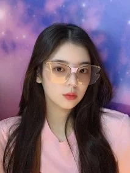

崔智秀（Lia）

基本信息
| 中文名 | 崔智秀 | 韩文名 | 리아 | 生日 | 2000-07-21 | 星座 | 巨蟹座 | 队内担当 | ITZY主唱 | 所属社 | JYP Entertainment |
|---|
外貌与气质
Lia 长相温柔温婉，五官精致柔和，自带富家大小姐的优雅气质。眉眼温柔干净，气质清冷又治愈，给人一种安静、乖巧、很舒服的感觉。穿搭风格简约大气，自带优雅氛围感，不刻意艳丽，却越看越耐看。

舞台实力
Lia 是 ITZY 不可或缺的灵魂主唱，天生拥有得天独厚的好嗓音。音色空灵清澈、温柔细腻，低音醇厚有氛围感，高音通透有爆发力，转音和假声处理非常细腻。她唱歌共情能力极强，很容易把听众带入歌曲情绪里，抒情歌、流行曲、舞台炸场曲都能完美驾驭。舞台上沉稳大气，气场安静却很有力量，是团队的声乐支柱
性格与人品
性格慢热内敛、温柔佛系，说话轻声细语，待人礼貌温柔，心思细腻敏感，很会换位思考体谅别人。性格安静不争不抢，不喜欢张扬，内心柔软善良，对待粉丝和队友都非常真诚。私下有点小迷糊、可可爱爱，偶尔呆萌反差感十足，安静的时候很文静，熟了之后又很温柔有趣。
个人魅力
她不靠夸张的造型和营业出圈，靠独特的音色、温柔的气质和真实的性格圈粉。温柔又有实力，安静又有力量，自带治愈感，是队内温柔又珍贵的存在。